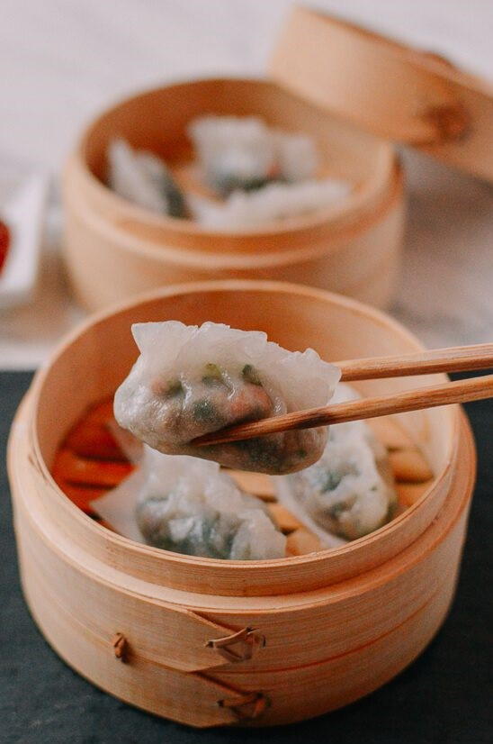

Da Fu Seafood Cusine

Restaurant Info:
Address: 5651 Steeles Avenue E Unit 1-3 Toronto, ON M1V 5P6
Hours: 8am - 11pm
Phone: (416)-321-6898
Our Review:
Located around Steeles and McCowan, This restaurant specializes in seafood. The cost of this place is cheap and has good quality food. If you are going with a large group we recommend to call in for reservations as it has long line ups. The restaurant is small, so everything is crowded. Although the place is small and crowded they manage to keep the restaurant clean. The appliances are mostly clean as well. For the food, it has good Dim Sum. The Dim Sum is ordered by a menu. We do not recommend going to Da Fu Seafood Cusine for dinner as it is cheap but the dinner quality is not the best. Katrina's favourite Dim Sum dish here is the pan-fried squid. Unlike the Dim Sum restaurants downtown, this restaurant has the squid pan-fried not deep-fried. The regular dim sum food is good. Katrina goes here once a month and the food is always consistent. The servers are very nice and friendly. if you have requests for water or refills they do it right away.
Spencer's Reviews rates this restaurant 3.2 stars. Overall this restaurant has good food for a cheap price. The service is excellent however, the atmosphere is average as it is very squished and there are long line ups which can be stressful.
| Criteria | Rating |
|---|---|
| Ambience | |
| Cleanliness | |
| Quality of food | |
| Service | Value |
Here are some images of Da Fu Seafood Cusines's food and atmosphere.


News
We are slowly going to review restaurants other than Chinese restaurants. If you would like us to review your restaurant contact us! Visit our about page for more information
Updates
We constantly update our website. New food and restaurants are going to be posted. Check our updates for more information.
Our Latest Post: Dumplings
Restaurant of The Month